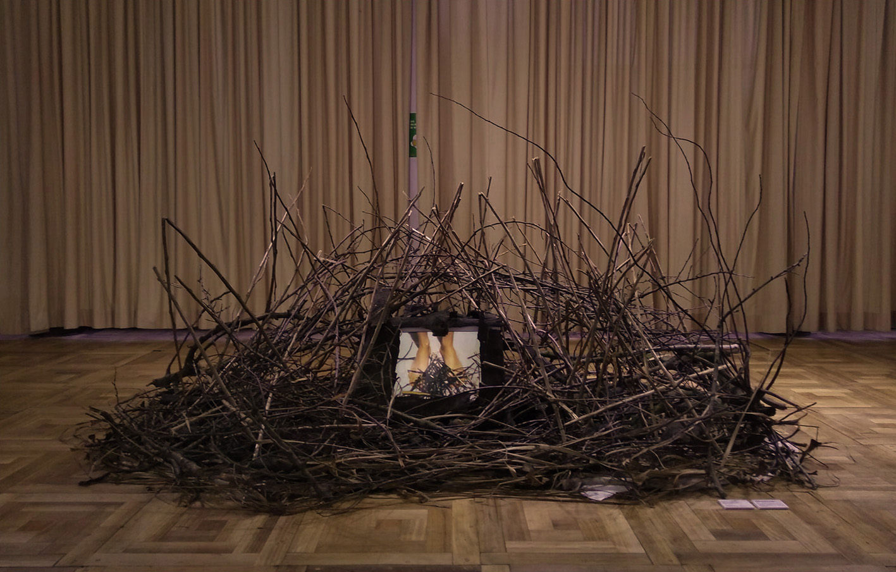
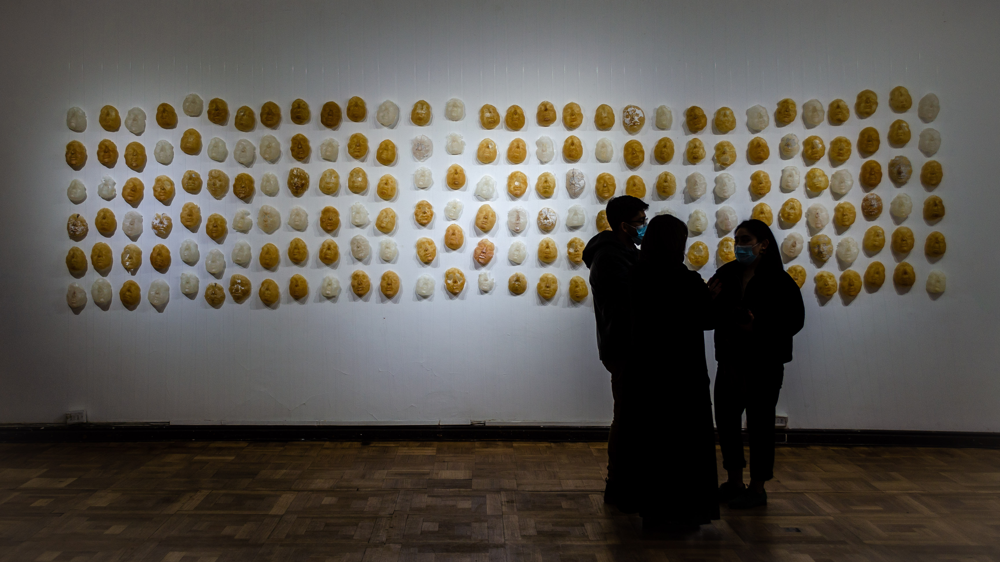
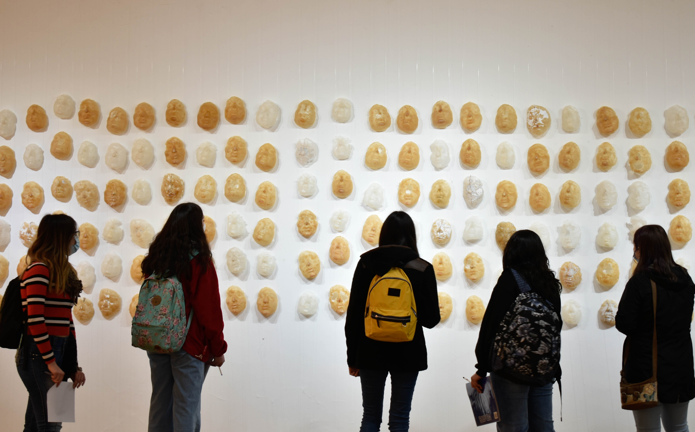
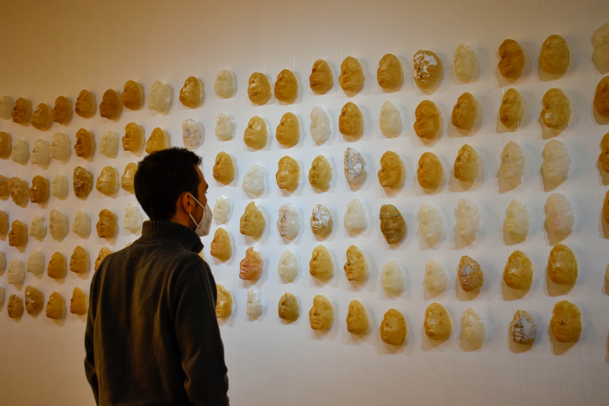
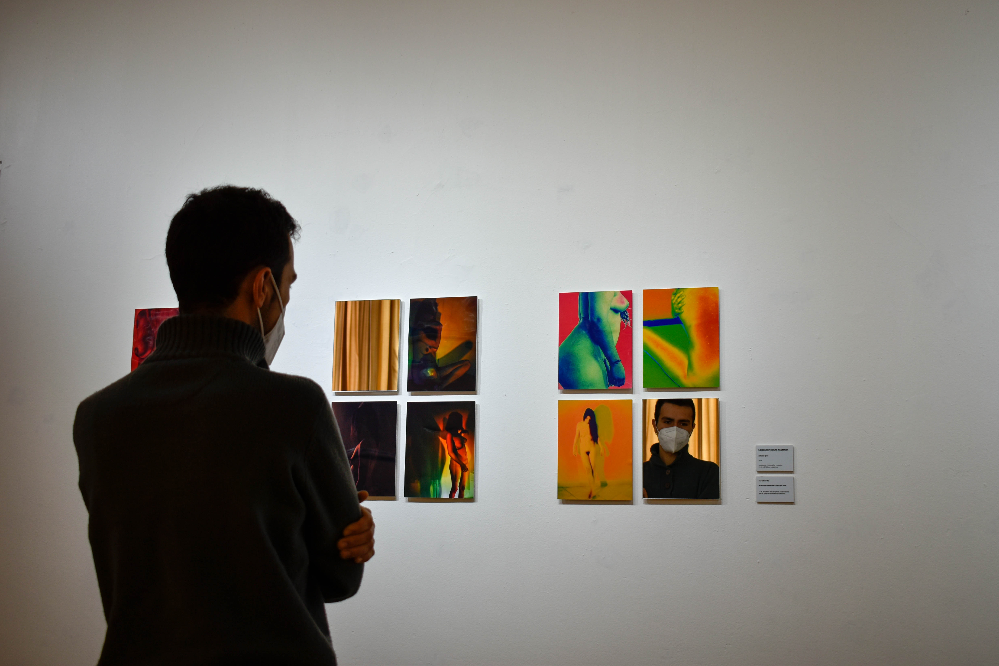
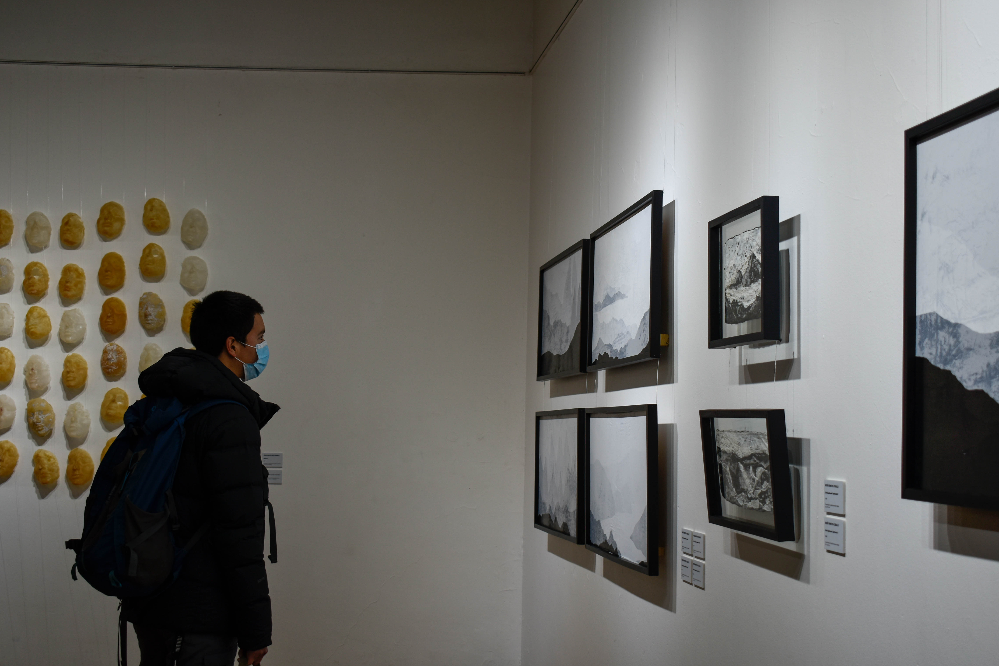

Habitar: espacios y memorias (2022)
El año 2022 se abre una convocatoria para la exposición de obras en la Sala Ventanal de la Corporación Cultural de Osorno, de la cual se pudo concluir como comunes denominadores los conceptos que dan nombre a la exposición Habitar: espacios y memorias.
Conceptos que se abren en múltiples dimensiones tanto formales y objetuales desplegando discursos poeticos, sentires, memorias individuales y colectivas.
La selección de obras y artistas nos desembrollan diferentes sentipensares del habitar y el cobijo que obtienen en los espacios y la memoria: habitar en el consumo, en los recuerdos, en la memoria historica, en los no lugares, en el hogar, en las calles donde transitamos, en el cariño y en el cuerpo.
Artistas: Paula Carmona Araya, Camila Contreras Tapia, Nicolas Cox Ascencio, Alonso Escobar Zabala, Matías Fuentes Ibacache, Paola Fuentes Fuentes, Francisca Hono Olmos, Valentina Inostroza Bravo, Irma Mellado Iturriaga, Samanta Nash Muñoz, María Constanza Reyes Malschafsky.


Trama: Revisión a cuatro artistas de la ciudad de Osorno (2021)
La exposición recoge la producción artistica individual para poner en valor las miradas colectivas de discursos artisticos y politicos. Diálogos entre artistas sobre sus inquietudes, impulsos y cuestionamentios que divisaron una narración de cruces y enlaces en común, impulsando la union y la red de arte contemporaneo en la ciudad de Osorno. Cuatro artistas de la ciudad investigan y experimentan con medios y lenguajes contemporaneo.
El corpus de selección de obras varía tanto en materialidad y conceptos, la utilización de materiales de desecho, recolección de materia orgánica, lecturas de la representación corportal femenina, cartografias sociales e intentos de reconstruccón son algunas de las propuestas que recogieron las y los artistas.
Artistas: Eduardo Filún Matus, Rocío Montoya Ceballo, Jonathan Petres Garnica, Lilisbeth Vargas Neumann





